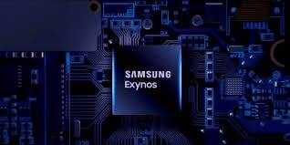

The next-level of intelligence is coming. With the Exynos 990, a mobile processor designed with a powerful AI processing capability, mobile experiences will evolve to meet the new aspects of mobility in the era of AI. Featuring a dual-core neural processing unit (NPU), the Exynos 990 processor delivers faster and efficient machine learning performance. When combined with the advanced image processing technologies, AI enables the camera to produce a pro-grade photography thru intelligent optimization. The Exynos 990 processor can be paired with the 5G cellular modem to deliver hyper-fast mobile broadband speed for the era of live. To offer an experience that’s like a computer, a gaming console, and a television on a mobile device, the Exynos 990 incorporates a powerful octa-core CPU, a cutting-edge GPU, an advanced display and a video subsystem that delivers unmatched performance to suit the next-level smartphone.
Enjoy the full measure of artificial intelligence on the go. A powerful neural processing unit (NPU) and digital signal processor (DSP) are built into the Exynos 990 for the next-level of on-device artificial intelligence. The Exynos 990, featuring dual-core neural processing unit (NPU) and improved digital signal processor (DSP), can perform up to approx. fifteen trillion operations per second (TOPS).1 This allows smartphone to offer richer mobile experiences with diverse intelligent features including intelligent camera, virtual assistant and extended reality. The Exynos 990 processor designed for AI will take smartphone’s capabilities to the next level.